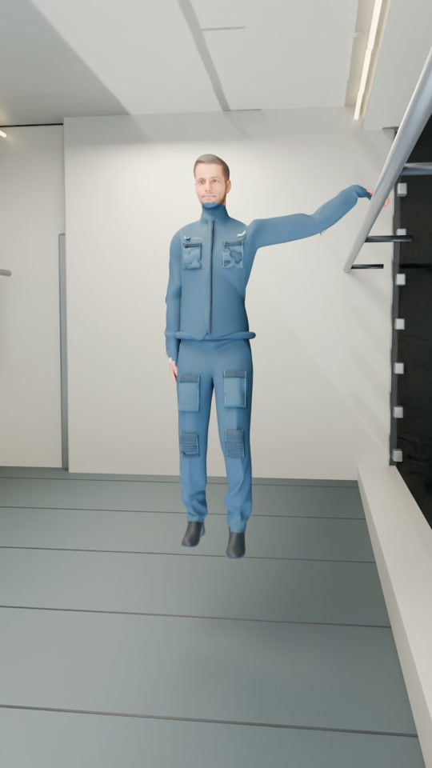
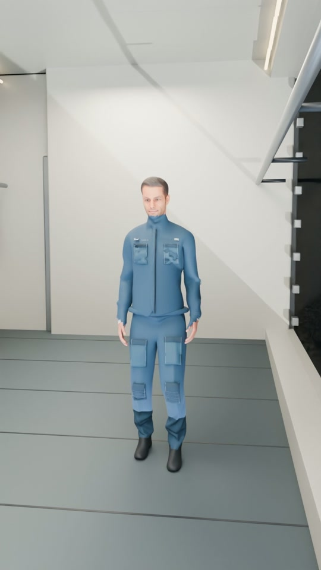
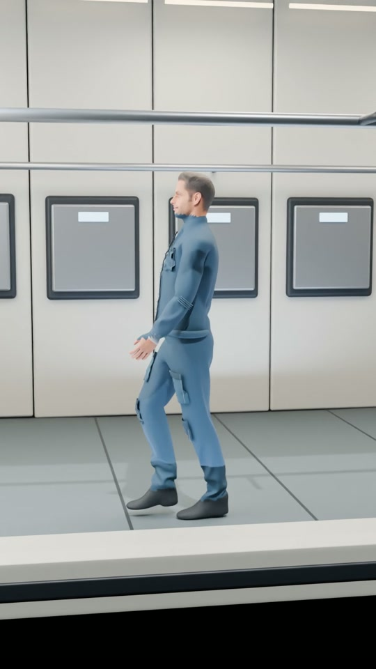

우주정거장을 돌리면,
사람이 걸을 수 있을까?
떠 있던 사람이 발을 딛고, 한 걸음을 내딛습니다. 회전하는 정거장에서는 바닥이 몸을 받쳐 주는 힘이 ‘무게’를 만듭니다.
· 3D 영상과 심화 해설
우주에서 ‘아래’를 만드는 방법
정거장을 돌리고,
바닥으로 몸을 받칩니다.
먼저 전체 모습을 충분히 보고, 가스 분사를 따라 창문 안으로 들어갑니다. 난간을 잡은 사람, 손을 놓는 순간, 마지막 걸음까지 이어서 관찰해 보세요.
영상의 회전 설정은 약 0.067g입니다. 지구와 같은 1g를 재현한 장면은 아닙니다. 아래 계산기에서 차이를 비교할 수 있습니다.
가운데가 축, 바깥쪽이 바닥입니다
고리의 둘레를 따라 걷는 사람에게는 바깥쪽 벽이 발을 딛는 바닥이 됩니다.
밖에서 보면, 몸의 방향이 계속 바뀝니다
정거장과 함께 도는 사람은 원운동을 합니다. 속력의 크기가 같아도 움직이는 방향이 계속 달라지므로, 중심을 향한 가속도가 필요합니다. 바닥이 발을 밀어 그 가속도를 만듭니다.
안에서 보면, 바닥이 몸을 받칩니다
정거장과 함께 회전하는 관점에서는 바깥쪽으로 향하는 원심력을 도입해 설명할 수 있습니다. 그 안에서 서 있는 사람은 바닥의 받침을 무게처럼 느낍니다. 두 관점은 같은 운동을 서로 다르게 표현합니다.
관측 기준과 접촉력의 구분은 Hall의 인공 중력 해설(2016)을 참고했습니다.
양쪽의 분사가 한 방향의 회전을 만듭니다
정거장을 통째로 밀어 보내는 것과, 중심 둘레로 돌리는 것은 구분해야 합니다.
고리의 서로 반대편에 있는 두 노즐이 서로 반대인 접선 방향으로 가스를 내보냅니다. 노즐이 받는 반작용도 서로 반대지만, 중심에서의 위치 역시 반대이므로 회전시키는 효과인 토크는 같은 방향으로 더해집니다.
R은 중심에서 노즐까지 거리, F는 노즐 하나가 받는 접선 방향 추력입니다. 두 추력이 같다면 중심을 옆으로 미는 효과는 상쇄하면서 회전을 시작할 수 있습니다.
외부 토크를 무시하면 정거장과 배출 가스의 각운동량 합은 일정합니다. 모터만으로 정거장을 돌릴 때에도 반대로 도는 다른 부분이나 외부와 각운동량을 주고받는 장치가 필요합니다.
원하는 회전수에 도달한 뒤에는 분사를 멈춰도 회전이 이어집니다. 다만 외부 토크나 내부 질량 이동이 있으면 회전 상태가 달라져 자세·속도 보정이 필요할 수 있습니다.
몸과 바닥이 만나는 세 단계
‘돌기 시작했다’와 ‘사람이 바닥에 서 있다’ 사이에 힘이 전달되는 과정이 있습니다.

처음부터 자유롭게 떠 있는 몸이 회전만으로 즉시 바닥에 끌려가지는 않습니다. 이 장면에서는 난간을 잡은 손을 통해 몸이 정거장과 함께 회전하게 됩니다.

짧은 시간 동안 공기 저항과 조석 효과를 무시하면, 몸은 놓는 순간의 접선 방향으로 나아갑니다. 그 경로가 회전하는 고리의 바닥과 만나 발이 닿습니다.

바닥이 몸의 운동 방향을 바꿔 원운동을 이어 갑니다. 발은 바깥쪽을, 머리는 회전축 쪽을 향합니다.
얼마나 빨리 돌아야 할까요?
바닥과 함께 회전하며 서 있는 사람의 가속도는 회전 속도의 제곱과 반지름에 비례합니다.
n은 분당 회전수(rpm), ω는 초당 회전각(rad/s), R은 회전축에서 바닥까지의 거리입니다. g는 지표 중력가속도의 기준값 9.80665m/s²를 뜻합니다.
- 중심 쪽 가속도
- 0.659 m/s²
- 회전 주기
- 한 바퀴 78.5초
- 바닥의 접선 속력
- 8.24 m/s
반지름 103m에서 1g를 만들려면 약 2.947rpm이 필요합니다.
정상 회전의 계산입니다. 걷는 사람의 코리올리 효과, 가속 중의 접선 방향 힘, 공기 흐름은 포함하지 않습니다. 작은 반지름에서 ‘1g와 비교’를 누르면 조절 범위 안의 103m로 돌아갑니다.
| 항목 | 값 | 뜻 |
|---|---|---|
| 반지름 | 103m | 축에서 바닥까지 |
| 각속도 | 0.08rad/s | 약 0.764rpm |
| 가속도 | 0.6592m/s² | 약 0.067g · 지구의 약 1/15 |
| 회전 주기 | 약 78.5초 | 정상 속도로 한 바퀴 도는 시간 |
벽이 돌기 시작하면, 공기는 어떻게 될까요?
벽은 먼저 움직이지만 공기 전체가 한순간에 같은 속도로 돌지는 않습니다.
움직이는 벽과 공기 사이의 점성 작용이 운동량을 전달합니다. 벽 근처에서 시작된 변화는 내부의 순환과 혼합을 통해 퍼집니다. 회전이 시작되는 동안에는 벽과 공기의 속도 차이 때문에 실내에서 일시적인 상대 바람이 생길 수 있습니다.
시간이 지나면 공기는 정거장의 회전을 따라가는 쪽으로 변합니다. 실제 선실에서는 통로와 칸막이, 사람과 장비, 환기 장치, 난류가 흐름에 영향을 줍니다. 바람의 속도나 잦아드는 시간은 정거장 형상과 가속 방법 없이 하나의 숫자로 정할 수 없습니다.
회전 유체의 경계층과 내부 순환에 관한 출발점은 Greenspan·Howard(1963)입니다. 이 연구를 근거로 실제 정거장의 공기 흐름을 그대로 계산했다고 해석해서는 안 됩니다.
공기는 물체의 움직임에 영향을 줄 수 있지만, 이 영상에서 사람이 서 있는 핵심 이유는 회전하는 바닥이 몸을 안쪽으로 받쳐 주기 때문입니다.
영상에서 이어지는 질문
무엇이 실제 힘이고, 무엇이 관측 기준에 따른 설명인지 함께 구분해 봅니다.
우주에는 중력이 없어서 사람이 뜨는 것 아닌가요?
지구 주변 궤도에도 지구의 중력이 작용합니다. 정거장과 사람이 함께 자유낙하하므로 바닥이 몸을 지탱할 필요가 거의 없어 떠 있는 것입니다. 회전 정거장에서는 바닥이 몸을 원운동시키는 추가적인 접촉력을 제공합니다.
목성 스윙바이와 자유낙하 영상에서 ‘중력이 작용하는 것’과 ‘무게를 느끼는 것’의 차이를 이어서 볼 수 있습니다.
회전축에 떠 있던 사람도 바닥으로 떨어지나요?
몸이 정확히 축에 정지해 있고 아무 힘도 받지 않는 이상적인 경우라면, 벽이 회전한다는 이유만으로 저절로 바깥쪽으로 이동하지 않습니다. 난간을 잡거나 밀고 나가거나, 공기와 접촉하는 등의 힘 전달과 초기 속도를 함께 살펴야 합니다.
줌인할 때 정거장의 회전이 멈춘 것처럼 보이는 이유는?
카메라가 회전하는 창문을 따라가면 정거장과 카메라 사이의 상대 움직임이 작아집니다. 영상의 작은 외부 시점 화면은 이때도 정거장이 계속 회전한다는 것을 보여 줍니다.
머리와 발이 느끼는 중력도 같을까요?
같은 각속도라면 a=ω²r이므로 축에 가까운 머리 쪽의 가속도가 더 작습니다. 영상 반지름 103m에서 머리가 발보다 축 쪽으로 1.7m 가까우면 머리 위치의 가속도는 발 위치보다 약 1.7/103, 즉 1.65% 작습니다. 이것은 위치별 가속도 비교이며 인체 내부 힘 전체를 계산한 것은 아닙니다.
실제로도 영상처럼 자연스럽게 걸을 수 있나요?
영상의 보행은 실제 지상 보행 기록을 3D 인물에 적용한 설명용 동작입니다. 0.067g의 보행을 검증한 생체역학 시뮬레이션은 아닙니다. 회전 환경에서는 이동 방향과 속도, 코리올리 효과, 회전 적응에 따라 균형과 발걸음이 달라질 수 있습니다.
커다란 바퀴형 정거장이 이미 실험으로 검증됐나요?
거주지 설계 연구와 실제 우주 실험을 구분해야 합니다. 예를 들어 ISS의 MARS 연구는 원심분리 장치로 생쥐에게 인공 1g를 제공한 실험입니다. 그 결과가 영상 같은 대형 유인 회전 정거장의 장기 거주를 검증했다는 뜻은 아닙니다.
연구 자료로 더 읽기
회전 거주지의 해석, 공기의 회전 적응, 실제 우주 실험을 나누어 읽으면 영상의 적용 범위가 분명해집니다.
- Hall (2016), Artificial Gravity in Theory and Practice학술대회 논문 · 회전 기준계, 바닥의 접촉력, 인공 중력과 공간 설계.
- Greenspan & Howard (1963), On a time-dependent motion of a rotating fluid유체 이론·실험 · 경계층과 내부 순환이 유체의 회전 적응을 이끄는 과정. 정거장 공기 자체의 실험은 아닙니다.
- Shiba 외 (2017), Development of new experimental platform ‘MARS’ISS 생쥐 실험 · 원심분리로 만든 인공 중력의 실제 우주 실험과 장치 개발.
- Clément (2017), International roadmap for artificial gravity research연구 로드맵 · 인체 적응, 노출 조건, 장기 적용에서 남은 연구 문제.
이 영상과 계산의 제작 범위
정거장, 지구, 인물과 카메라는 Blender의 3D 장면으로 제작했습니다. 영상은 가스 분사와 회전의 관계를 보여 주기 위해 가속 과정의 시간을 압축하고 가스의 가시성을 강조했습니다. 진공 분사의 밝기·모양을 실측한 영상은 아닙니다.
공기 흐름은 정성적으로 설명했으며 이 정거장의 CFD를 수행한 결과가 아닙니다. 계산기는 정상 회전의 원운동 관계만 계산합니다. 지구 배경과 구름 변화도 영상 표현으로, 특정 시각의 위성 관측 자료와 일치시키지는 않았습니다.
배경음악은 Gemini에서 제작한 기존 하드 록 곡 〈Line on the Glass〉를 사용했습니다.